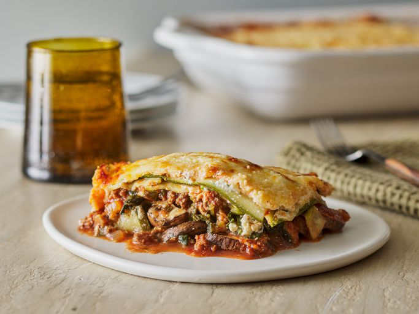

Lasagna
Home

The Finished Product. This Beautiful low carb zuchini lasagna recipe is perfect for the summer and easy to make, takes 30 minutes to make and 60 to cook its made for anyone craving some italian
Ingredients
- 2 large zucchini
- 1 tablespoon salt
- 1 pound ground beef
- 1.5 teaspoons ground pepper
- 1 small green pepper, diced
- 1 onion, diced
- 1(16 ounce) can tomato sauce
- 1 cup tomato paste
- quarter cup red wine
- 2 tablespoons chopped fresh basil
- 1 tablespoon chopped fresh oregano
- 3 tablespoons hot water, or as needed
- 1 egg
- 2 tablespoons chopped fresh parsley
- 1(16 ounce) package frozen chopped spinach, thawed and drained
- 1 pound fresh mushrooms, sliced
- 8 ounces shredded mozzarella cheese
- 8 ounces grated Parmesan cheese